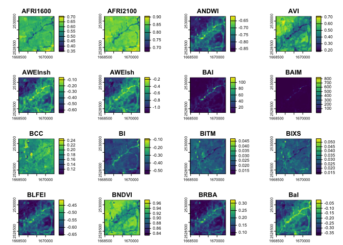

The goal of rsi is to address several repeated spatial infelicities, by providing utility functions that save you typing and help avoid repetitive stress injuries. Specifically, rsi provides:
- An interface to the Rsome – excuse me, Awesome Spectral Indices project, providing the list of indices directly in R as a friendly tibble,
- A method for efficiently calculating those awesome spectral indices using local rasters, enabling rapid spectral inference,
- A method for downloading STAC data – excuse me, retriving STAC information – from any STAC server, with additional helpers for downloading Landsat, Sentinel-1, and Sentinel-2 data from free and public STAC servers providing rapid satellite imagery,
- A raster stack integration method for combining multiple rasters containing distinct data sets into a single raster stack.
Installation
You can install rsi via:
install.packages("rsi")You can install the development version of rsi from GitHub with:
install.packages(
'rsi',
repos = c(
'https://mikemahoney218.r-universe.dev',
'https://cloud.r-project.org'
)
)Or, if you use pak:
# install.packages("pak")
pak::pak("Permian-Global-Research/rsi")Example
The spectral_indices() function provides a tibble with data from the Awesome Spectral Indices project:
library(rsi)
spectral_indices()
#> # A tibble: 231 × 9
#> application_domain bands contributor date_of_addition formula long_name
#> <chr> <list> <chr> <chr> <chr> <chr>
#> 1 vegetation <chr [2]> https://gith… 2021-11-17 (N - 0… Aerosol …
#> 2 vegetation <chr [2]> https://gith… 2021-11-17 (N - 0… Aerosol …
#> 3 water <chr [6]> https://gith… 2022-09-22 (B + G… Augmente…
#> 4 vegetation <chr [2]> https://gith… 2021-09-20 (1 / G… Anthocya…
#> 5 vegetation <chr [3]> https://gith… 2022-04-08 N * ((… Anthocya…
#> 6 vegetation <chr [4]> https://gith… 2021-05-11 (N - (… Atmosphe…
#> 7 vegetation <chr [4]> https://gith… 2021-05-14 sla * … Adjusted…
#> 8 vegetation <chr [2]> https://gith… 2022-04-08 (N * (… Advanced…
#> 9 water <chr [4]> https://gith… 2021-09-18 4.0 * … Automate…
#> 10 water <chr [5]> https://gith… 2021-09-18 B + 2.… Automate…
#> # ℹ 221 more rows
#> # ℹ 3 more variables: platforms <list>, reference <chr>, short_name <chr>The first time spectral_indices() is called it will download the most up-to-date version of the spectral indices JSON file, and then write the resulting table to a cache file in tools::R_user_dir("rsi"). After that, spectral_indices() will only download a new file if the cache is older than 1 day, or if the update_cache argument is TRUE, in order to provide the most up-to-date data as quickly as possible. If offline, spectral_indices() will always fall back to the cache or, if no cache file exists, a (possibly out-of-date) data file included in rsi itself.
Separately, the get_stac_data() function provides a generic interface for downloading composite images from any accessible STAC catalog. For instance, we could download a cloud-masked composite of Landsat’s visible layers using get_stac_data() and a few helper functions from rsi:
aoi <- sf::st_point(c(-74.912131, 44.080410))
aoi <- sf::st_set_crs(sf::st_sfc(aoi), 4326)
aoi <- sf::st_buffer(sf::st_transform(aoi, 5070), 1000)
landsat_image <- get_stac_data(
aoi,
start_date = "2022-06-01",
end_date = "2022-06-30",
pixel_x_size = 30,
pixel_y_size = 30,
asset_names = c("red", "blue", "green"),
stac_source = "https://planetarycomputer.microsoft.com/api/stac/v1/",
collection = "landsat-c2-l2",
mask_band = "qa_pixel",
mask_function = landsat_mask_function,
output_filename = tempfile(fileext = ".tif"),
item_filter_function = landsat_platform_filter,
platforms = c("landsat-9", "landsat-8")
)
terra::plot(terra::rast(landsat_image))For these common use cases, however, rsi also provides helper functions which provide most of these arguments for you. For instance, that get_stac_data() call could be as simple as:
landsat_image <- get_landsat_imagery(
aoi,
start_date = "2022-06-01",
end_date = "2022-08-30",
output_filename = tempfile(fileext = ".tif")
)
terra::plot(terra::rast(landsat_image))
By default, these functions download data from Microsoft’s Planetary Computer API, using a number of configuration options set in rsi_band_mapping objects provided by the package. You can see these default configuration options by printing the band mapping objects, and can adjust them through arguments to any get_* function in the package.
landsat_band_mapping$planetary_computer_v1
#> An rsi band mapping object with attributes:
#> names mask_band mask_function stac_source collection_name query_function sign_function class
#>
#> coastal blue green red nir08 swir16 swir22 lwir lwir11
#> "A" "B" "G" "R" "N" "S1" "S2" "T" "T1"We can put these pieces together and calculate as many spectral indices as we can based on our downloaded Landsat imagery. The calculate_indices() function, well, calculates indices, using subsets of our spectral_indices() data frame:
available_indices <- filter_bands(
bands = names(terra::rast(landsat_image))
)
indices <- calculate_indices(
landsat_image,
available_indices,
output_filename = tempfile(fileext = ".tif")
)
#> |---------|---------|---------|---------|=========================================
# Plot the first handful of spatial indices
terra::plot(terra::rast(indices))
And last but not least, rsi includes a utility for efficiently combining rasters containing different data about the same location into a VRT, which allows programs like GDAL to treat these separate data sources as a single file. For instance, we can combine our Landsat imagery with the derived indices:
raster_stack <- stack_rasters(
c(landsat_image, indices),
tempfile(fileext = ".vrt")
)
# The first few panels are now Landsat measurements, not indices:
terra::plot(terra::rast(raster_stack))
This can be extremely useful as a way to create predictor bricks and other multi-band rasters from various data sources.
License
Copyright 2023 Permian Global Research, Limited.
Licensed under the Apache License, Version 2.0 (the “License”); you may not use this file except in compliance with the License.
You may obtain a copy of the License at:
https://www.apache.org/licenses/LICENSE-2.0
Unless required by applicable law or agreed to in writing, software distributed under the License is distributed on an “AS IS” BASIS, WITHOUT WARRANTIES OR CONDITIONS OF ANY KIND, either express or implied. See the License for the specific language governing permissions and limitations under the License.